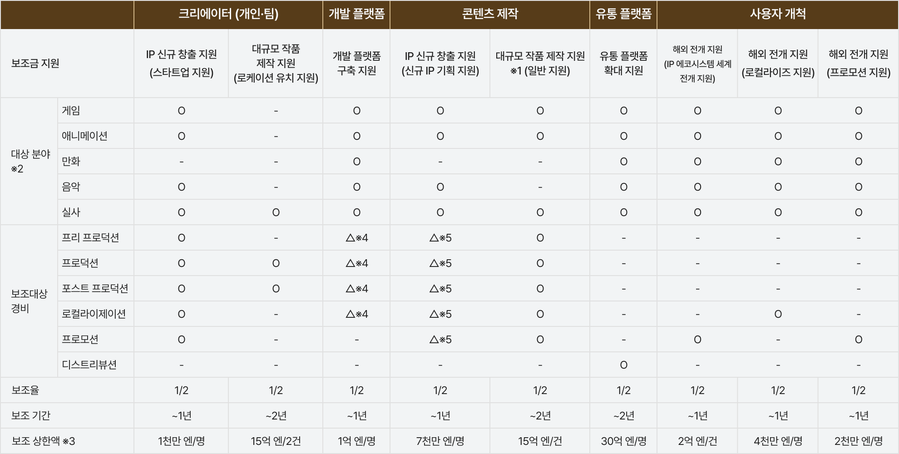
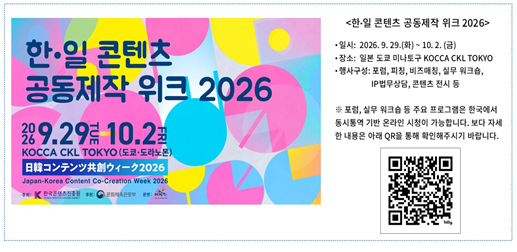
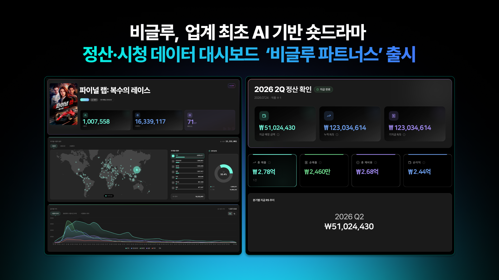

(자료 제공: 비글루)
“숏드라마는 영화에 비해 제작 기간이 매우 짧고, 출시 후 수일 내에 성과를 예측할 수 있어 시장 변화에 발 빠르게 대응할 수 있다는 점에서 기존 롱폼과 차이가 있다.”
Q. 스푼랩스가 비글루 서비스를 론칭한 2024년 7월부터 원년 멤버로 참여한 것으로 알고 있다. 현재 어떤 업무를 담당하고 있는지 소개 부탁드린다.
(이) 비글루는 24년 7월에 스푼랩스가 론칭한 서비스로, 글로벌 숏드라마 플랫폼이다. 글로벌 플랫폼에 한국어, 일본어, 영어로 된 오리지널 드라마들을 제작하고 있다. 저는 비글루에서 비글루의 숏드라마 콘텐츠를 총괄하고 있다.
스푼랩스 안에서 ‘스푼’이라는 오디오 라이브 플랫폼이 있는데, 거기에서 신규 마켓 개발을 담당하다가 비글루 신사업을 준비할 때 처음 합류했다. 그리고 한국 숏드라마 기획을 시작으로 지금은 비글루 전체의 실사 드라마 및 AI 드라마 제작 총괄을 하고 있다.
Q. 개인적으로는 영화 분야에서 일하다가 지금은 숏폼을 총괄하고 있다. 두 영역을 모두 경험한 입장에서 숏폼과 기존 장르(롱폼)의 차이는 무엇이라고 생각하는가?
(이) 우선 제작 기간이다. 영화 같은 경우는 창작자 입장에서 준비 기간이 짧으면 1~2년, 길면 10년 이렇게 걸리기도 하고 제작부터 후반 작업하는 기간까지 굉장히 긴 시간을 한 프로젝트에 몰입해야 한다. 그런데 숏드라마 같은 경우는 기획해서 기획안을 만들고 대본을 완성하는 데 평균 한 달 정도 걸리고, 제작하고 촬영까지가 보통 2주 안에 끝난다. 후반 작업도 한 달이면 된다. 한국에서 영상 등급 심의받고, 릴리즈가 되기까지 전체 프로세스가 평균 두 달 반에서 세 달 정도 걸리다 보니까 제작 기간이 영화에 비해 짧다는 점이 가장 큰 차이다.
그리고 비글루는 매주 화요일 또는 목요일에 릴리즈를 하는데, 주말만 지나면 ‘잘 됐다, 안 됐다’라는 작품의 성과를 내부에서 대략적으로는 예측할 수 있다. 그래서 발 빠르게 시장의 변화에 맞춰 갈 수 있다는 점도 차이가 있다.
“이미 검증된 한국 콘텐츠(K-아이덴티티)의 글로벌 흥행력을 바탕으로 숏폼 시장에서도 성공 사례를 만들고자 사업을 추진했다.”
Q. 스푼랩스에서 오디오를 중심으로 하다가 영상으로 확장을 한 건데 추진 배경이 궁금하다.
(이) 24년 초반에 이미 해외에는 릴숏(ReelShort)이나 드라마박스(DramaBox) 같은 여러 가지 숏드라마 플랫폼이 있었다. 그런데 한국에서는 한국어로 된 실사 숏드라마가 거의 없었다.
당시 상황을 보면 내부적으로 숏드라마가 비글루의 첫 신사업은 아니었고, 여러 가지 신사업 아이템들을 한창 시도하던 중이었다. 그 중 숏드라마 플랫폼이 가장 비전이 있다고 생각했다. 왜냐하면 글로벌에 이미 숏폼 플랫폼이 여러 개 있지만, <오징어게임>처럼 한국의 롱폼이 이미 글로벌에서 성공을 한 사례들도 있고, 한국 회사가 K-아이덴티티를 가지고 숏폼으로도 성공 사례를 많이 만들어 볼 수 있지 않을까 생각했다.
Q. 비글루에서는 숏폼 콘텐츠를 어떻게 정의하고 있는지 궁금하다.
(이) 인스타그램의 릴스, 틱톡 콘텐츠, 유튜브의 쇼츠 이런 것들을 전반적으로 다 포함해 숏폼이라고 부르는 것 같다. 그런데 저희가 지금 제작하고 있는 드라마는 해외에서는 ‘버티컬 드라마’, ‘마이크로 드라마’ 등 굉장히 다양하게 지칭한다. 한국 업계에서 ‘숏드라마’로 많이 사용하고 있다. 더 대중화가 되면 사람들이 한 개의 단어를 선택해서 쓰지 않을까 싶은데, 지금은 굉장히 다양한 단어들이 혼재해 있다.
저희가 생각하는 숏드라마는 50화에서 100화 정도 되는 에피소드에, 각 에피소드별로 한 1분 내외 정도 길이의 콘텐츠, 그리고 처음 시작해서 끝까지 이야기가 이어지는 포맷의 콘텐츠다. 그래서 유튜브 쇼츠처럼 한 편에 20~30초짜리로 끊기는 것과는 구분되게 처음부터 끝까지 계속 시청할 수 있는 형태를 숏드라마라고 생각하고 있다.
“북미 시장을 중심으로 중국계 플랫폼의 성장이 폭발적이다. 하지만 한국의 실사 숏드라마에 대한 글로벌 성과가 매우 좋아 한국 숏폼 드라마의 미래를 밝게 보고 있다.”
Q. 글로벌의 숏드라마 시장은 어떤 상황인가? 그리고 현재 국내 시장의 숏드라마 성숙도는 어느 정도라고 보는가?
(이) 저희가 추산하기로 릴숏이나 드라마박스와 같은 중국계 플랫폼이 작년에 각각의 플랫폼에서 약 1조 이상 매출을 낸 것으로 보인다. 그들의 매출 비중이 가장 큰 곳이 북미다. 동남아시아나 유럽도 24년부터 현재까지 약 5배 이상 커졌다. 일본은 24년도 1월과 25년도 12월 말을 기준으로 보면 그 사이 약 50배 정도 성장을 했다. 하지만 한국이나 일본은 시장이 워낙 작아서 성장 속도는 빠르지만 매출액 절대값으로 보면 많이 뒤처져 있다고 본다.
Q. 중국향 플랫폼이 글로벌의 숏드라마 시장을 선점한 상황에서, 한국이 후발주자로 참여하는 것에 대해 어떻게 생각하는가?
(이) 저희 회사를 기준으로 생각해보면, 만약 비글루가 숏드라마를 오늘 시작했으면 중국 플랫폼을 따라잡는 데 굉장히 오래 걸렸을 것이라고 생각한다. 그런데 비글루가 론칭한 지 벌써 2년이 흘렀고, 그동안 다양한 시도를 하면서 실패와 성공 경험을 두루 겪었다. 그 과정에서 비글루의 여러 히트작들도 탄생하면서 많이 성장했다. 그래서 중국 플랫폼에 비해서 뭔가 ‘부족하다’, ‘뒤처진다’ 이런 생각은 하고 있지 않다.
그리고 저희는 한국 실사 드라마를 열심히 제작하고 있는데 그 이유는 한국 숏드라마의 성과가 매우 좋기 때문이다. 한국뿐 아니라 일본, 대만, 미국 등 굉장히 글로벌하게 다양한 나라에서 많이 시청하고 있다. 평균 매출 중 약 30%는 한국이지만 나머지가 해외다. 저희가 생각하기에는 한국의 아이덴티티를 가진 한국 드라마를 만드는 데 많은 기획 PD들이 쌓아온 노하우가 올해 초부터 발현되기 시작하고 있는 것 같다. 그래서 한국 숏드라마의 비전을 매우 밝게 보고 열심히 제작을 하고 있다.
Q. 중국은 웹소설 IP 숏드라마가 대세인 듯하다. 혹시 한국도 숏드라마와 웹소설 간의 확장 가능성이 높은 편이라고 보는가?
(이) 중국은 애초에 웹소설 작가들이 처음부터 숏드라마로 영상화될 걸 감안하고 쓴다. 그래서 한 화를 그대로 시나리오의 형태로 바꾸면 바로 영상으로 쓸 수 있도록, 중국 웹소설은 그렇게 문법이 구축되어 있다. 그런데 한국은 그렇지는 않다. 한국에서는 웹소설과 숏드라마가 개별화되어 있다. 처음부터 숏드라마로 제작할 걸 감안하고 웹소설 작가들이 작업한 게 아니기 때문에 한국의 웹소설 IP를 그대로 가지고 와서 대본화하기 힘들다.
하지만 숏드라마 비즈니스 모델 자체가 웹소설, 웹툰과 굉장히 비슷하다 보니까 웹소설과 웹툰을 굉장히 열심히 보는데 포스터(썸네일) 같은 것들에서 레퍼런스를 받기도 한다.
“검증된 핵심 플롯을 기반으로 국가별 현지화 리메이크를 진행하는 것이 중요하다. 그리고 언어권별로 타깃팅과 국가별 소비성향에 맞춰 차별화된 유료 정책으로 공략한다.”
Q. 글로벌 확장을 위해 비글루가 가장 중점을 두는 경쟁 전략은 무엇인가?
(이) 숏드라마는 플롯이 똑같은데 포맷이 다른 경우가 굉장히 많다. 예를 들면 저희가 올해 1월에 릴리즈했던 작품 중에서 <오늘 한류 스타와 이혼하겠습니다>라는 작품이 있는데, 남자 주인공이 한류 스타고, 여자 주인공은 남자 주인공에게 배신당하고 복수하는 이야기다. 한국 작품으로 성과가 굉장히 좋았다. 그래서 영어로 리메이크를 하면 좋겠다고 생각해서 똑같은 플롯과 스토리인데, 한국어에서 영어로 바꾸고 제목을 한류 스타에서 할리우드 스타로 바꾸고 현지화 작업을 거쳐서 5월에 릴리즈했는데 미국에서도 반응이 굉장히 좋았다. 이렇게 리메이크 작업이라는 게 결국 국내에서 검증하고 글로벌로 현지화하는 방식이다. 그런데 이번에는 한국 드라마 히트작을 가지고 제작했지만 만일 미국에서 먼저 히트가 된 작품이면 그걸 한국어, 일본어, 아니면 AI 드라마로도 리메이크할 수 있다.
숏드라마에서는 플롯이 굉장히 중요하다. 초반 회차에 시청자들을 끌어당긴 다음에 무료 회차까지 가지고 가서 결제로 유인하는데 이런 플롯이 굉장히 귀하다. 굉장히 많이 테스트를 하는데도 그런 플롯을 가지는 작품들이 많지 않다. 흥행한 플롯을 지키면 주인공의 직업이 뭐가 되든 상관없이 계속 보는 것이다. 이게 플롯의 힘이다. 콘텐츠 팀에서는 시청자들이 볼 수밖에 없는 그런 플롯을 계속 생각해내는 게 매일 하는 일이다.
Q. 비글루의 국가별 차별화 전략은 무엇인가?
(이) 비글루는 앱스토어, 구글플레이 스토어에 들어가면 대부분의 나라에서 앱을 다운받아서 시청할 수 있다. 현재 한국어, 일본어, 영어로 된 드라마들을 제작하고 있는데, 아무래도 숏드라마 특성상 그 언어로 만든 드라마들이 그 국가에서 일단은 제일 먼저 반응을 한다. 그래서 영어 드라마 같은 경우는 미국, 영국, 캐나다, 호주 같은 영미권 시청자들을 타깃으로 하고 있고, 한국어 같은 경우는 한국인들이 제일 많이 시청하지만, K-콘텐츠에 대한 글로벌 수요가 높다 보니 일본, 대만, 동남아 시장부터 또 미국, 남미까지도 수요가 있다. 현재 약 12개 언어로 제공하고 있다.
Q. 수익모델은 어떻게 되는가? 국가별로 콘텐츠 소비나 이용자들의 지불 방식에 차이가 있는가?
(이) 비글루는 총 3개의 수익 모델을 가지고 있다. 재화 코인을 사는 단건 결제, 구독권, 광고 수익인데 국가별로 콘텐츠 소비의 차이가 있다. 먼저 한국 이용자들은 가성비를 따지고, 다양한 콘텐츠를 탐색하는 데 익숙하다. 지불한 만큼 하나라도 더 시청하려는 경향이 강해서 주간 구독권을 많이 선택한다. 반면에 일본은 고가치 이용자가 많고 한국보다 큰 시장이지만 단권 결제만 한다. 그런데 막상 한 편을 다 완주하려면 단권 결제가 훨씬 비싸다. 그런데도 단권 결제를 계속 고수한다. 그렇다고 일본 이용자들의 리텐션(retention, 잔존률)이 낮지도 않다. 동남아는 굳이 따지자면 구독권을 약간 더 선호하는 것 같다. 하지만 저희가 국가별로 가격정책을 다르게 가져감에도 불구하고 비싸다고 생각해서인지 ‘기다리면 무료’처럼 30초나 1분짜리 광고를 보고 유료 에피소드를 보려는 경향성이 뚜렷하다. 북미 이용자들은 한국 이용자들처럼 주간 구독권을 선호하는 것 같다.
“자체적으로 숏드라마 전문 작가를 발굴하고 육성하여 지속적인 숏드라마 생태계 구축 기반을 만들어 나가고 있다. 축적된 시청 데이터를 기반으로 이용자층의 저변도 넓혀가고 있다.”
Q. 숏드라마에 특화된 스토리를 생산하는 작가 시스템이 있는가?
(이) 일단 숏드라마는 롱폼처럼 메인 작가와 보조작가가 있는 것이 아니라 작가님 한 분이 작품 전체를 집필한다. 보통 ‘숏폼적 허용’이라고 부르는데, 고증을 열심히 해야 한다거나, 아니면 개연성이 뛰어나야 한다거나 하는 중요성이 낮아서 가능하다. 오히려 에피소드가 끝날 때, 그 다음 회차를 궁금하게 하는 ‘클리프행어(Cliffhanger)’가 명확한지를 더 중점적으로 본다.
작년부터 숏드라마 작가를 지속적으로 양성해서 내부 기획 PD와 협업할 수 있도록 ‘비글루 라이터스 룸’이라는 워크숍을 운영하고 있다. 아무래도 아직 한국은 숏드라마 초반 시장이기 때문에 히트작이 있는 작가가 없어서 워크숍 등을 통해 협업할 수 있는 작가들을 발굴하고 있다. 작년에 워크숍을 통해 총 12분의 작가님을 모셨는데 지금 여덟 분 정도가 협업하고 있다. 올해는 한국과 일본 양국에서 동시 운영하고 모집 규모도 확대했다.

[그림 1] 비글루 ‘라이터스룸’ 2기 한·일 동시 모집> 포스터
(출처: 비글루 제공)
Q. 워크숍에 참여하신 작가분들은 어떤 분들인가?
(이) 완전 새로운 분들이다. 롱폼 드라마를 쓰시던 분들이 숏드라마 문법으로 고칠 때 완전 새롭게 시작을 해야 하다 보니까 대본을 쓸 줄 몰랐던 작가나 완전 신인인 경우 더 빠르게 흡수하는 것 같다. 원래 직업도 웹소설, 방송제작 PD, 문학 소설 작가 등 굉장히 다양하다. 드라마 대본이라고 생긴 형태를 처음 쓰시는 작가들도 많다. 그런 작가들의 작품이 비글루에서 1위도 하고 히트하고 있다.
Q. 비글루의 콘텐츠 수급 구조는 어떻게 되는가?
(이) 최근 숏드라마 제작사가 많아지면서 전체 수량은 증가하고 있지만 비글루의 자체 제작의 비율은 점점 줄어드는 추세다. 처음 42편의 작품을 론칭했을 때는 비글루가 오리지널로 제작한 비율이 100%였다. 한국어로 된 숏드라마 자체가 아예 없었기 때문에 외부에서 수급하기 힘든 상황이라서 자체적으로 제작할 수밖에 없었던 상황이었다. 이제는 외부 플랫폼에서도 한국 실사 드라마를 많이 제작하고 있어서 유통사나 외부 제작사를 통한 수급 비중도 조금씩 늘어가고 있다. 그렇지만 내부에서 기획하는 오리지널 작품들에 대한 평가가 더 좋은데 이건 어쩔 수가 없는 것 같다. 왜냐하면 외부 작품은 비글루 시청자가 뭘 좋아하는지 전혀 모르는 상태에서 기획하고 제작하기 때문이다. 비글루가 자체 제작한 오리지널 작품들은 기획 PD들이 이미 기존에 제작된 작품들을 보고 ‘어떤 작품이 제일 잘 팔렸고, 어떤 작품이 제일 안 됐고, 어떤 장르를 시청자들이 좋아하고, 어떤 장르들을 시청자들이 선호하지 않고’ 이런 내부 데이터들이 축적되어 있는 상태에서 기획을 하다 보니 비글루 시청자 맞춤형으로 제작할 수밖에 없는 것 같다. 하지만 외부로부터의 작품 수급은 계속 늘려갈 것이다. 특히 앞으로 실사 제작비보다 훨씬 적게 드는 AI 드라마가 많이 제작되면 전반적으로 작품도 많이 늘어날 것이고, 외부에서 수급하는 작품 비중도 지금보다 훨씬 더 커지지 않을까 생각하고 있다.
Q. 외국 제작사와도 작업을 하는가?
(이) 한국 드라마는 한국 제작사와 거의 100% 작업을 하는데, 미국 드라마 같은 경우는 미국(LA)에도 비글루 팀이 있어서 작년 말에 비글루 지사가 생겼고, 현지 제작사와 숏드라마를 제작한다. 일본 같은 경우도 현지 제작사가 별도로 있지만, 일본은 지리적으로 한국과 가깝다 보니까 한국 제작사와도 협업을 하고 있다.
Q. 제작사와 협업하는 경우 수익배분은 어떻게 하는가?
(이) 저희가 100% 투자하는 작품 같은 경우는 제작비에 제작 수수료를 더해서 제작사에서 수익을 가져갈 수 있는 구조로 되어 있다. 편당 제작비 자체가 크지 않다 보니까 공동 제작하고 싶어 하는 제작사들도 꽤 많다. 이 경우 공동 투자하여 수익을 나누고 있다.
Q. 숏드라마를 제작하는데 소요되는 제작비와 제작기간은 어느 정도인가?
(이) 처음 비글루를 론칭했을 때만 해도, 숏드라마를 처음 찍어보는 제작사들이 굉장히 많았다. 당시에는 전체 제작비(50편 정도)가 평균 7천만 원 정도였던 것 같다. 지금은 제작비가 올라서 적게는 1억 초반에서 많게는 2억 중반 정도여서, 평균 1억 8천~2억 정도일 것 같다.
제작 기간은 50화~60화 정도 되는 분량 촬영일이 최소 7~9회(일)인데, 스태프 쉬는 일정까지 감안하면 보통 촬영 기간이 2주 정도다.
중국도 비슷하다. 그런데 중국은 숏드라마가 너무 대중화가 되어 있다 보니 롱폼 제작비까지는 아니어도 제작비가 높은 작품들이 점점 늘어나고 있다. 로케이션에도 공을 더 들인다고 들었다. 저희도 실사로 제작을 할 때, 제작비가 점점 올라가는 경향이 있다. 한국 같은 경우는 초반에는 신인 배우들이 많이 참여했는데, 지금은 광고나 TV 드라마 출연 배우들이 캐스팅되면서 제작비가 상승한 부분이 있다.
Q. 숏드라마 플랫폼의 연령층은 어떤가?
(이) 북미 시장 같은 경우는 다른 숏드라마 플랫폼처럼 40-50대 주부들로 비슷한 시청층을 가지고 있는 것 같다. 국내는 25-34세 층이 더 많은 것 같다. 중국계 플랫폼 경쟁사 같은 경우에는 40~50대 이상의 여성층이 좀 두드러지기는 했다. 24년도, 25년도까지는 그랬던 것 같다. 반대로 저희는 초반에 좀 더 한국스러운 로맨스물에 집중하다 보니까 25-34세 여성 이용자가 굉장히 많았는데, 저희로서는 중국 플랫폼들처럼 좀 더 자극적인 복수 로맨스 장르에 더 친숙한 40~50대도 굉장히 중요하다고 생각해서 그런 쪽으로 IP들을 확대해 나갔다. 그 결과 IP별로 다르지만 고연령대가 꽤 들어왔다. 그리고 처음에는 거의 70%가 여성이었는데, 남성층 유입을 위해 ‘구원 서사’나 ‘영웅서사’를 늘리고, 최근에는 AI 애니메이션 중에 먼치킨류를 테스트하다 보니까 남성 이용자 비중이 높아져서 지금은 여성과 남성 비중이 대략 6:4 정도다. 반대로 중국 플랫폼들은 한국 드라마를 25-34세 연령층이 좋아해서 저희를 벤치마킹하면서 요즘에 연령대가 많이 낮아진 것 같다.
“AI는 제작비 한계를 극복하고 작가의 창의성을 극대화할 수 있는 최상의 도구다. 국내 제작사와의 상생을 위해서는 무엇보다 제작사가 스스로 성장할 수 있도록 시장 데이터를 투명하게 공유하는 것 또한 중요하다.”
Q. 비글루에서는 올해 5월에 ‘애니’ 전용 탭을 추가하여 AI 기반 콘텐츠 라인업을 확대한 것으로 알고 있다. 비글루에서는 숏폼 사업을 하는데 있어 AI 기술에 어떤 기대를 가지고 있는지 궁금하다.
(이) 작년부터 AI를 활용한 드라마들을 많이 제작하기 시작했다. 실사로 찍은 드라마에 AI로 찍은 전경 샷을 사용하는 방식으로 초반에 많이 활용했다. 가령 남자 주인공이 부잣집 아들이라는 설정인데 제작비 2억 원으로는 그 설정에 어울리는 집을 섭외할 수 없어서 AI로 전경 샷을 생성해서 활용했다. 작년 9월부터는 Full AI로 된 드라마를 두 편 론칭하고 그 이후로 조금씩 AI 드라마들을 내보내고 있다.
AI 드라마는 저희가 한정된 제작비 안에서 할 수 없는 것을 실현할 수 있다는 점이 강점이다. 예전에는 작가님들에게 로케이션이 너무 많으면 제작비로 감당이 힘들어 좀 줄여달라고도 요청해야 했는데 지금은 그러지 않아도 된다. 그런 면에서 AI 드라마는 작가의 창의성을 훨씬 더 다양하게 보여줄 수 있다고 생각한다. 실제로 <파이널 랩>이라는 Full AI 드라마는 가상의 F1 같은 레이싱 경기가 배경인데 실사에서는 이 경기를 2억 원에 제작할 수 없지만 AI라 가능하다.
최근에는 자체적으로 AI 숏드라마 제작 플랫폼 ‘비글루 스튜디오’ 베타를 공개하기도 했다. 영상·이미지 생성부터 캐릭터 관리, 커뮤니티 배포까지 숏드라마 창작 전 과정을 지원하는 올인원(All-in-One) 플랫폼이라고 보면 된다.
하지만 아직까지는 AI가 대본 집필을 완전히 대체하기는 어렵다고 본다. 나중에 더 똑똑한 AI가 나오면 가능할 수도 있을지 모르겠지만 아직까지는 아니라고 생각한다. 작가가 대본을 쓰는데 검색이나 고증 같은 도움을 주는 도구의 역할을 할 뿐이다. 아직 대본을 집필하는 과정에 있어서는 인간의 영역이 굉장히 크다고 생각한다. 그래서 저희는 AI로 좀 더 규모감 있는 것들을 제작 영상으로 생성하는 데 주로 활용하고 있다.
그리고 애니 전용 탭 같은 경우는 원래 실사로 흥행했던 로맨스 하이틴 장르 작품을 애니메이션으로 만들어도 될지 테스트해 보려는 목적으로 제작했는데, 최근 애니메이션 탭이 신설되면서부터는 풀 AI 애니메이션으로 몇 편을 제작하고 있다. 애니메이션 강국인 일본 시장을 목적으로 일본어로 된 애니메이션을 제작해 보고도 싶었다. AI로 제작하기 위한 테스트 목적과 당연히 원소스 멀티유즈로 하나의 IP를 계속 확장해 나가는 것도 염두에 두고 있다.
Q. 국내 플랫폼과 제작사가 함께 성장하기 위해 어떤 노력을 하고 있는가?
(이) 비글루가 플랫폼이기는 하지만, 제작사들과 함께 성장해야 한다는 것을 굉장히 중요하게 생각하고 있다. 그래서 저희의 궁극적인 목표는 아마 오리지널을 제작하지 않는 것이지 않을까라고 생각한다. 외부 제작사에서 드라마 시청자들이 좋아하고, 비글루에서 잘 팔릴 만한 드라마들을 만들어서 오면, 저희는 시장성만 판단하면 된다고 생각한다. 그게 플랫폼의 역할이다. 하지만 아직은 국내 제작사들이 숏드라마 시청자의 취향을 잘 모르는 것 같다. 그런 면에서는 한국 제작사도 공부를 많이 해야 하는 상황인 것 같다. 그래서 제작사들을 위해 ‘비글루 파트너스’라고 AI 기반의 숏드라마 정산·시청 데이터 대시보드인데 유튜브와 비슷하다. 저희와 작업을 같이 한 제작사가 자사 작품의 성과를 모두 볼 수 있는 것이다. 예를 들어 국가별 조회 수와 시청자 규모, 무료 회차 시청 이후 유료 전환 여부 및 전환율, 회차별 이탈 지점 등 상세한 시청 데이터를 제작사에게 구체적으로 제공해서 후속 작품을 릴리즈하는 데 도움이 되도록 지원하고 있다. 수익도 그 안에서 정산을 한다. 그래서 공동 투자든 공동 제작이든 수익을 나누는 모든 파트너사가 볼 수 있다. 이런 부분을 더 장기적으로는 가져가야 된다고 생각한다. 더 나아가서는 AI 제작 기술을 활용하는 데 비용이 많이 지출된다고 하는데 이 부분에 대한 지원도 자체적으로 고민하고 있다. 이런 부분들이 서로 상생할 수 있는 관계가 아닌가 싶다.

[그림 2] AI 기반 숏드라마 정산·시청 데이터 대시보드 ‘비글루 파트너스’
(출처: 비글루 제공)
그리고 마지막으로 제작사를 위한 정부차원의 제작지원도 너무 필요하다. 다만, 제작지원 사업자 선정을 할 때 실제 유통 플랫폼의 의견이 반영될 수 있는 구조도 검토해 볼 필요가 있다. 어쨌든 이 작품이 플랫폼에 유통이 됐을 때 정말 시청자들이 좋아할 만한 작품인지에 대해 피드백 같은 것을 드릴 수 있으면 좋을 것 같다.
결국 중요한 것은 플랫폼과 제작사, 창작자가 함께 성장할 수 있는 생태계를 만드는 것이다. 비글루 역시 데이터와 AI 기술을 기반으로 국내 숏드라마 산업의 성장을 지원하는 플랫폼 역할을 지속해 나갈 계획이다.